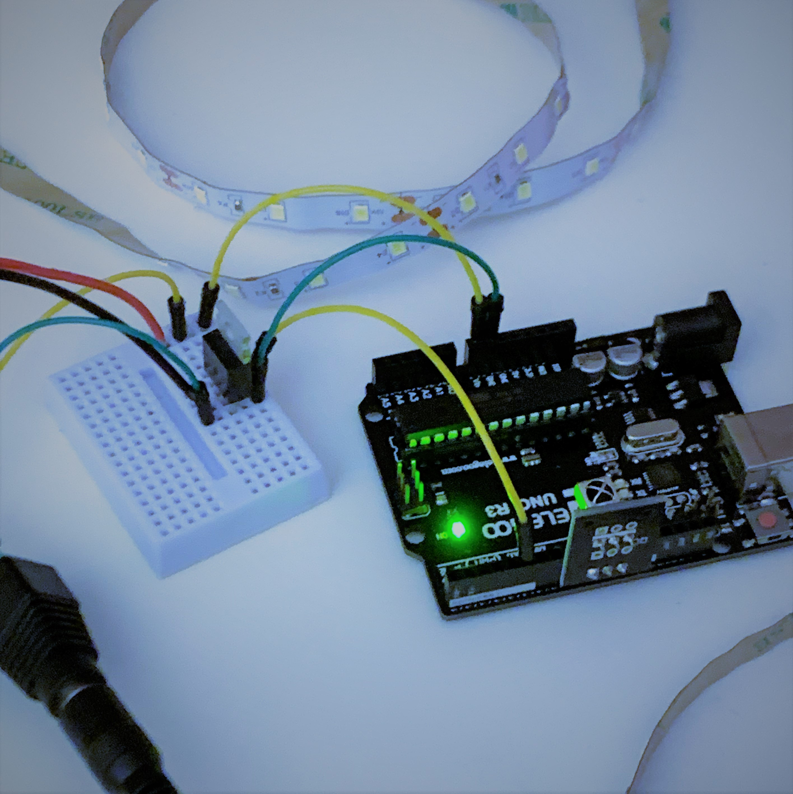
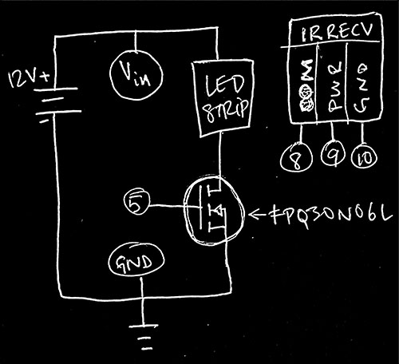

What could be more fun than fading a LED with some buttons? Fading a whole strip remotely!
Sounds like it could be dangerous, considering the LED strip package claims it'll require a whole 18 Watts, or 1.5A (18W / 12V = 1.5A). Hold on how are we going to even get that power? Our arduino can't produce that!
Fortunately our trusty friend the FQP30N06L N-Type MOSFET transistor, who can handle up to 50Volts and 32Amps peak is up for the job, will happily tap into a 12V wallwort capable of providing 2Amps, perfect for the application.
For added fun and safety we're going to control the whole thing remotely using infra- red. We're even going so far as to leave our precious laptop out of the mix by using the 12V to power the Arduino, happily taking (incidentally) up to 12V at the Voltage-In pin.
#include
#define IRRECV_PIN 8
#define IRPWR_PIN 9
#define IRGND_PIN 10
#define GATE_PIN 5
IRrecv irrecv(IRRECV_PIN);
decode_results results;
const byte powerBtn = 0xFFA25D;
const byte upBtn = 0xFF906F;
const byte downBtn = 0xFFE01F;
const byte repeat = 0xFFFFFFFF;
byte lastBtn;
byte remotePress;
bool LEDPower = true;
byte brightness;
void setup() {
Serial.begin(9600);
pinMode(IRPWR_PIN, OUTPUT);
pinMode(IRGND_PIN, OUTPUT);
pinMode(GATE_PIN, OUTPUT);
digitalWrite(IRPWR_PIN, HIGH);
digitalWrite(IRGND_PIN, LOW);
irrecv.enableIRIn();
irrecv.blink13(true);
}
void loop() {
analogWrite(GATE_PIN, brightness);
if (irrecv.decode(&results)) {
remotePress = results.value;
if (remotePress == repeat) {
remotePress = lastBtn;
}
switch (remotePress) {
case powerBtn:
if (LEDPower == false) {
brightness = 100;
LEDPower = true;
Serial.println("ON");
delay(1000);
break;
}
else {
analogWrite(GATE_PIN, 0);
LEDPower = false;
brightness = 0;
Serial.println("OFF");
delay(1000);
break;
}
case upBtn:
if (brightness < 235) {
brightness += 20;
}
else {
brightness = 235;
}
Serial.println("INC");
lastBtn = upBtn;
break;
case downBtn:
if (brightness > 20) {
brightness -= 20;
}
else {
brightness = 20;
}
Serial.println("DEC");
lastBtn = downBtn;
break;
default: break;
}
irrecv.resume();
}
}